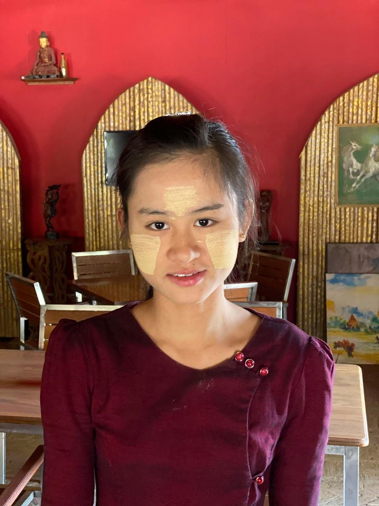

Momentky z Myanmaru jaro 2020
Pár momentek z Myanmaru.
13)
Přelet na Inle lake.
10)
Západy slunce v Baganu.
28)
Výhoda barmských autobusů. Když jsou hodně naložené, řidič nevidí dozadu, takže můžeš přiběhnout k autobusu, vylézt na střechu a jet bez placení.
26)
Pohoda v Mandalay.
1)
Susu, barmanka z Barmy.

2)
Bagan. V oblasti je kolem 4000 pagod a chrámů.
4)
Chrámy v Baganu.
5)
Chrámy v Baganu.
7)
Zátarasy.
9)
Západy slunce v Baganu.
11)
Já byl strašně líný brzy ráno vstávat na ty východy s balóny, tak jsem si vybral ubytování tak, abych je mohl sledovat z postele :-)
12)
Billboardy na podporu Aung San Suu Kyi, která získala na návrh Václava Havla nobelovu cenu míru.
14)
Na letišti jsem vystupoval jako jediný. Ostatní letěli do jiné destinace. A tak jsem se ocitl na letištní ploše sám a pár minut hledal východ z ranveje.
15)
Vyrábíme bavlnu na jezeře Inle.
16)
Kayanky s typickými spirálami na krku.
17)
Jezero Inle.
18)
Interiér jednoho z chrámů na jezeře Inle.
19)
Pagody Kakku. Je jich tu 2500.

20)
Pagody Kakku.
22)
Ale stejně tě po čase Barmani chytí a donutí tě k fotce. Jinak takhle si představuji, že vypadají talibanci.
23)
Člověk ujde tři kroky a hned ho odchytnou Barmanky a jdeme se fotit.
24)
Jeden z chrámů, kam mě dovezl taxikář Susu. Tady se zase o mě zajímaly mnišky.
25)
Další zastávka s taxikářem Susu. Zde jsem se mohl projít po mostu. Dřevěná popraskaná prkna, hluboká propast a Barmani tipující, zda most přejdu a přežiju.
27)
Barma je chudá země. Semafory jsou zde nakreslené. Bohužel na elektřinu nejsou peníze.
3)
Uvnitř pagod jsou sochy Buddhy.
6)
Vstupy do chrámů.
8)
Chrámy v Baganu.
21)
Pagody Kakku. Ideální místo na úkryt.